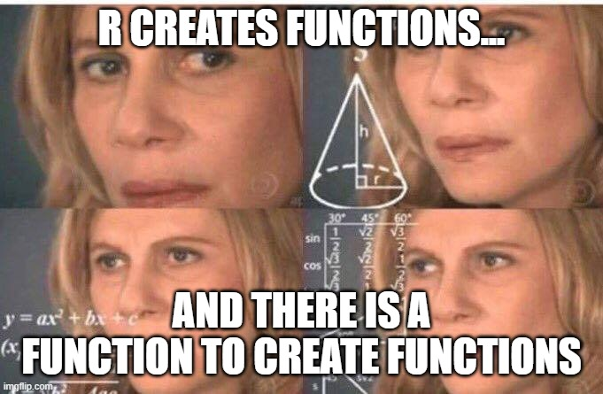
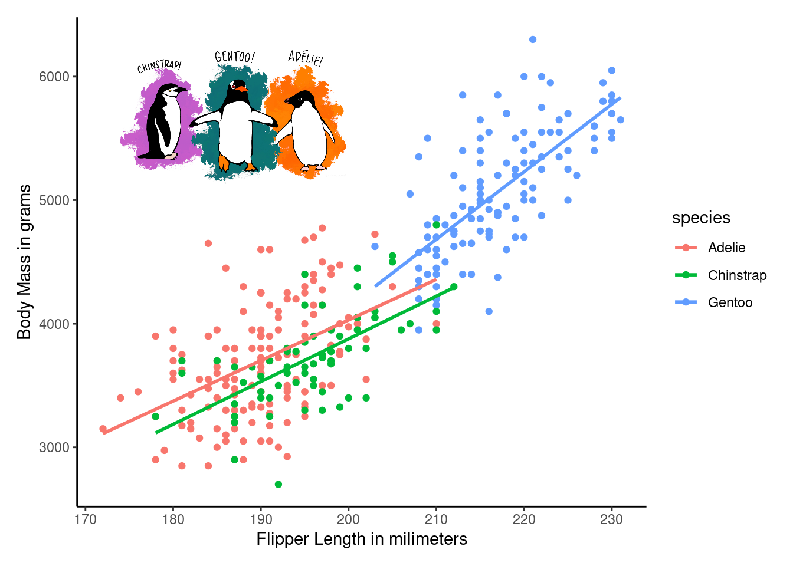

myFirstFunction <- function(name){
statement <- paste0(name," ", "is a good student.")
return(cat(statement))
}5 Functions and R packages
We have studied the most important objects in R. There are other objects that will be studied in upcoming advanced topics.
I left behind an important type of object: functions. A function is an object that performs an operation based on an input. The function will ask for input information and after that, the function will give an output.
Functions can be created with the command function() which is in simple words a function that creates other functions. Sounds redundant but it is an accurate statement!

In the code above, I’m creating a new function by using function. Inside the parenthesis there is one argument named name. That’s the only information this function is asking for. You need to provide a name or a vector of names. The function will return a phrase, let’s try it out:
myFirstFunction("Nicole")Nicole is a good student.You may notice now, that R is very smart. It knows that the argument must be a character string in this case. You also should pay attention to how I use the word “argument”. All functions will require at least one argument. An argument is the input information needed to generate an output. In this case myFirstFunction() works with character vectors.
We can try myFirstFunction() again, but this time we can use several names at the same time:
severalNames <- c("Nicole", "Emma","Nina")
myFirstFunction(severalNames)Nicole is a good student. Emma is a good student. Nina is a good student.Great! Our function is smart enough to repeat the same statement on different names. As you can see, functions are useful objects in R, in fact; functions are everywhere in the R space.
Tip
Everything is an object, and everything is a function in R.
5.1 Built in functions
I have good news! You don’t have to create new functions in this course. We will use functions already programmed by other users called “developers”. R is an open source language, any person can create new functions and allow the use of the function for free. R has many of this functions already programmed in the global environment.
Again, let’s see some examples:
mean(mtcars$hp) ### estimates mean or average[1] 146.6875R also has data sets that you can use for practicing. In this example, I’m estimating the mean horse power, in the data set called mtcars. You may see the list of data set using the function data().
median(mtcars$hp) ### Estimates the median[1] 123The function median() is also an example of a built-in function in R.
There are many more functions in R already programmed to be used. We will study more functions according to the specific topic.
5.2 R Packages
R is not a software, it is a programming language. Programming languages are made to create software. In R we call these software packages. Packages are a set of functions that allow you to simplify steps in your analysis. As a new R user in this class, you don’t need to know how to program a package, you will use packages already created by other programmers.
Packages in R are free, but you have to install the package in your local R environment. You will have to install the package only once. All packages are available in a huge repository called CRAN (The Comprehensive R Archive Network). R is automatically connected to CRAN. You only need to install a new package typing the function install.packages():
install.packages("ggplot2")In the code above, I’m installing a new package called ggplot2. This is a package with a lot of instructions to create beautiful plots. We will learn more about ggplot2 in the next chapters.
5.2.1 Packages are like books in your shelf.
After installing a package, you need to call the package every time you open a new session in R. For instance, in the next code, I’m creating a scatter plot using the package ggplot(). You will notice that I’m calling the package from the “bookshelf” using the function library(ggplot2). If you are a Pokemon fan, your package is a Pokemon, and you have to call your Pokemon to the battle field.
Also, I will plot data from the package palmerpenguins(Horst et al., 2020)
Click here to see the packages
### The rule is to write the packages required by your code at the beginning
## Packages loaded or called
library("jpeg") ## reads pictures into R
library(patchwork) ## more tools to add features in a plot
library(ggplot2) ## creates plots
library(palmerpenguins) ## This package has the penguin data
picture <- "penguins.jpg"
img <- readJPEG(picture, native = TRUE)ggplot(penguins, aes(x = flipper_length_mm,
y= body_mass_g,
color = species)) +
geom_point() +
geom_smooth(se = FALSE, method = "lm" ) +
theme_classic() +
xlab("Flipper Length in milimeters")+
ylab("Body Mass in grams")+
inset_element(p = img,
left = 0.05,
bottom = 0.65,
right = 0.5,
top = 0.95)
5.3 Questions
Rcontains data sets available for practicing. You can see the list of data sets by runningdata(). Run thedata()function, after that select one data set, then run the functionsummary(). What did you see after runningsummary()?
### Example: I'm running summary() with the data set named 'mtcars'. Select
### another data set from data()
data()
summary(mtcars)References
Horst, A. M., Hill, A. P., & Gorman, K. B. (2020). Palmerpenguins: Palmer archipelago (antarctica) penguin data. https://doi.org/10.5281/zenodo.3960218